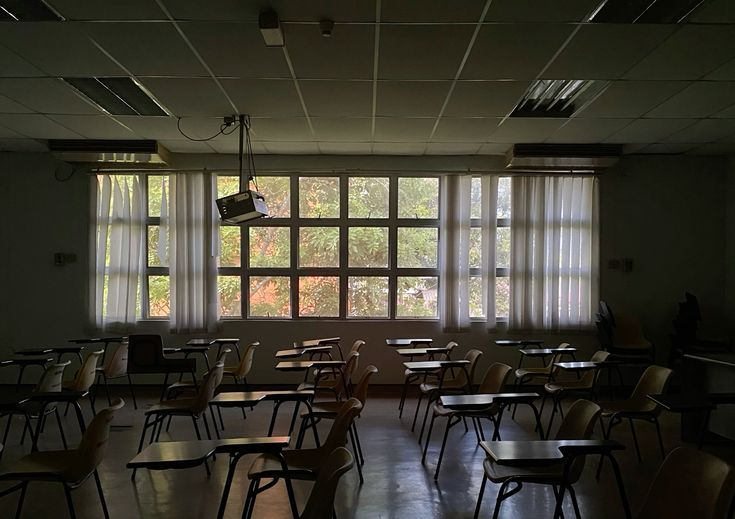
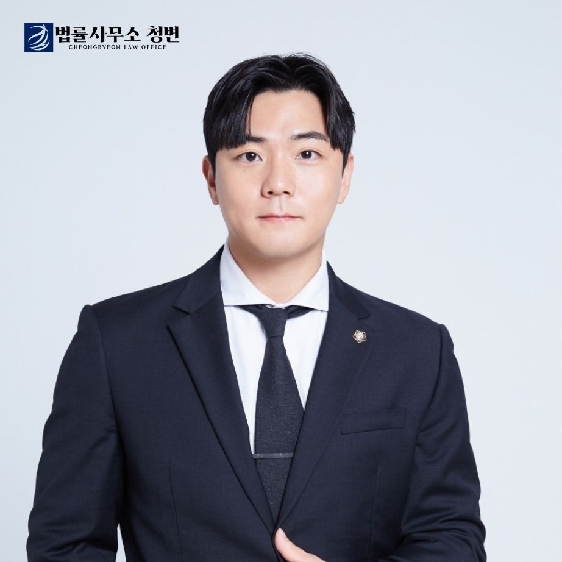

신고 접수부터
조치 결정까지
90일의 절차
학교와 교육지원청은 법이 정한 기한 안에서 움직입니다. 그 기한이 피해학생에게는 보호의 시점이고, 가해학생에게는 방어의 기회입니다.

학교폭력 사안처리 흐름도
인지 및 신고 접수
117 신고, 교사·보호자 신고, 담임 관찰 등으로 인지합니다. 접수대장에 기록하고 학교장에게 보고한 뒤 관련학생 확인서를 받습니다.
법 제20조 · 제14조④
가해자와 피해학생의 즉시분리
인지 즉시 분리하되, 방법은 24시간 이내 결정하고 기간은 최대 7일입니다. 피해학생이 반대의사를 표명하면 분리하지 않습니다.
법 제16조①단서 · 시행령 제17조의2
학교장 긴급조치
피해학생 긴급보호 요청 시 제1~3·6호를, 가해학생 선도가 긴급하면 제1·3·5·6·7호를 먼저 부과합니다. 심의위원회가 추인하면 생활기록부에 기재됩니다.
법 제16조① · 제17조④~⑦
사안조사
48시간 이내 교육지원청에 보고하면서 전담조사관 배정을 요청하거나 전담기구가 자체조사합니다. 면담·확인서·SNS 기록·진단서를 모아 조사보고서를 작성합니다.
법 제14조④ · 제20조의6
자체해결 부의 여부 심의
전담기구가 네 요건과 피해학생 측 동의를 서면으로 확인합니다. 요건을 갖춰도 피해학생 측이 요구하면 반드시 심의위원회를 엽니다.
- 2주 이상 치료 진단서를 발급받지 않았을 것
- 재산상 피해가 없거나 즉각 복구되었을 것
- 학교폭력이 지속적이지 않을 것
- 신고·진술에 대한 보복행위가 아닐 것
학교장 자체해결
가해학생 조치 없음. 생활기록부에 남지 않습니다. 다만 동일 사안으로 다시 심의위원회를 열 수 없습니다.
심의위원회 개최 요청
제로센터가 사례회의로 조사의 완결성을 확인하고, 필요하면 보완조사·수사의뢰를 합니다.
법 제13조의2
심의위원회 심의 · 의결
조치의 내용이 여기서 결정됩니다. 학교장의 요청 접수일부터 21일 이내 개최가 원칙이고 7일 범위에서 연장됩니다. 대면 심의가 원칙이라 학생과 보호자가 직접 출석해 진술합니다.
위원회는 학교폭력의 심각성·지속성·고의성과 반성 정도·화해 정도·선도가능성을 따져 조치를 정합니다. 회의는 비공개이나 당사자는 개인정보를 제외한 회의록 열람·복사를 신청할 수 있습니다 — 불복을 검토할 때 처분 이유를 확인하는 핵심 자료입니다.
법 제12조 · 제13조 · 제21조③ · 시행령 제19조
조치결정 및 통보
교육장은 피해학생 보호조치를 7일, 가해학생 조치를 14일 이내 시행합니다. 근거와 이유를 적어 서면으로 통보합니다.
법 제16조③ · 제17조⑨
불복 — 행정심판 · 행정소송
처분을 안 날부터 90일 이내에 다툴 수 있습니다. 청구만으로는 효력이 멈추지 않아 집행정지를 따로 받아야 합니다.
법 제17조의2~제17조의4
사안조사 단계부터
변호사의 조력이 필수적입니다.
심의위원회는 학교와 전담조사관이 정리해 올린 기록을 바탕으로 판단합니다. 그래서 조력이 필요한 첫 시점은 결과를 받은 뒤가 아니라, 확인서를 쓰기 전입니다.
심의위원회가 내리는 조치
여러 조치가 동시에 부과될 수 있습니다. 가해학생 조치는 호수가 높을수록 생활기록부에 오래 남고, 진학에 미치는 영향도 커집니다.
피해학생 보호조치법 제16조①
| 호 | 내용 | 비고 |
|---|---|---|
| 제1호 | 학내외 전문가에 의한 심리상담 및 조언 | 비용 지원 2년 |
| 제2호 | 일시보호 | 지원 30일 |
| 제3호 | 치료 및 치료를 위한 요양 | 치료비는 가해학생 보호자 부담 |
| 제4호 | 학급교체 | — |
| 제6호 | 그 밖에 보호를 위해 필요한 조치 | 제5호 삭제 |
가해학생 조치2024. 3. 1. 이후 신고 기준
| 호 | 조치 | 생활기록부 |
|---|---|---|
| 제1호 | 서면사과 | 조건부 기재유보졸업과 동시 삭제 |
| 제2호 | 접촉·협박·보복행위 금지 | 조건부 기재유보졸업과 동시 삭제 |
| 제3호 | 학교에서의 봉사 | 조건부 기재유보졸업과 동시 삭제 |
| 제4호 | 사회봉사 | 기재졸업 후 2년 · 심의 시 단축 |
| 제5호 | 특별교육이수 또는 심리치료 | 기재졸업 후 2년 · 심의 시 단축 |
| 제6호 | 출석정지 | 기재졸업 후 4년 · 심의 시 단축 |
| 제7호 | 학급교체 | 기재졸업 후 4년 · 심의 시 단축 |
| 제8호 | 전학 | 기재졸업 후 4년 · 단축 불가 |
| 제9호 | 퇴학처분 (의무교육 제외) | 기재삭제 대상 아님 |
조치의 이유가 피해학생이나 신고·고발 학생에 대한 협박 또는 보복행위라면, 제6호~제9호를 동시에 부과하거나 조치를 가중할 수 있습니다(법 제17조②).
같은 사건, 정반대의 역할
어느 쪽을 대리하느냐에 따라 준비할 서면과 증거, 지켜야 할 기한이 달라집니다.
피해를 기록으로 만드는 일
주장하는 피해사실을 빠짐없이 심의위원회의 판단 대상으로 올리는 것. 사안조사에서 나오지 않은 사실은 애초에 심의 대상이 되지 않습니다. 그 사실을 뒷받침할 증거도 최대한 확보하도록 돕습니다.
사안조사
- 확인서를 시점·횟수·표현까지 특정해 작성
- SNS·메신저 기록 보전
- 진단서 발급 시점 관리
심의위원회
- 심각성·지속성·고의성 의견서
- 전문가 의견 청취 요청 — 요청 시 반드시 청취
조치 이후
- 조치가 가벼우면 피해학생 측도 불복 가능
- 집행정지 대응
- 민사·형사 병행 판단
사실관계를 다투고 조치를 조정하는 일
인정할 부분은 인정해 반성의 정도를 제대로 평가받고, 과장되거나 증거가 없는 부분은 걸러내는 것. 전부 부인하면 반성이 없다고 보고, 전부 인정하면 하지 않은 일까지 떠안습니다.
사안조사
- 확인서 작성 전 상담 — 제출한 진술은 되돌리기 어려움
- 쌍방·오인신고 검토
- 긴급조치 전 의견제시 기회 행사
심의위원회
- 사실관계 반박과 양정 요소 소명
- 회의록 열람·복사로 처분 이유 확인
조치 이후
- 90일 내 불복, 집행정지 시기 판단
- 서면사과·봉사 등 1~3호 이행기한 관리
기한을 넘기면 생활기록부에 기재되고, 뒤늦게 이행해도 지워지지 않음
조치의 결론을 실질적으로 정하는 것은 사안조사 단계의 확인서와 증거입니다. 심의위원회는 그 기록 위에서 판단합니다.
학교 절차 하나로 끝나지 않습니다
피해학생 측은 치료비와 위자료를 민사로, 범죄에 해당하는 행위는 형사로 따로 다퉈야 합니다. 가해관련학생 측은 심의위원회 조치와 별개로 형사·소년보호 절차와 손해배상 청구를 함께 대비해야 합니다. 따로 진행하면 놓치는 것이 생깁니다.
청변은 어느 쪽을 대리하든 아래 일곱 단계를 같은 방식으로 진행합니다. 아이가 학교로 제대로 돌아가는 것까지가 사건의 끝입니다.

아이의 이야기를 직접 듣습니다
전해 들은 말로는 사건의 결이 드러나지 않습니다. 아이와 마주 앉아 나온 시점·횟수·표현이 확인서의 구체성을 만들고, 그 구체성이 심의위원회의 판단을 가릅니다.
심의위원회가 열리기 전, 사라지기 전에 붙잡습니다
CCTV가 있는 경우 — 학교 CCTV 담당 교사와 직접 소통하고, 필요하면 증거보전 신청을 병행해 영상을 확보합니다. 보존기간이 지나면 영상은 되돌릴 수 없기 때문에 상담 당일부터 확보 절차에 바로 착수하고, 확보한 영상은 위원들이 심의에서 직접 확인할 수 있도록 준비합니다.
목격자밖에 없는 사건인 경우 — 주변 학생들이 진술서를 쓸 수 있도록 양식과 작성 방식을 안내합니다. 학교 안의 일은 물증이 남지 않는 경우가 대부분이라, 주변 학생의 기억이 사실상 유일한 증거가 됩니다.
그 밖의 증거가 명확한 경우 — 위원들이 단 하나도 누락하지 않고 볼 수 있도록, 모든 증거를 의견서에 체계적으로 정리해 제출합니다.
조사 자리에 함께 앉고, 사전조사의견서를 냅니다
확인서를 쓰기 전부터 무엇을 어떻게 적을지 함께 정리합니다. 전담조사관의 사전조사와 자료 제출 과정에 모두 동행합니다. 아이 혼자 조사에 들어가는 일은 없습니다.
실제로 많은 보호자가 정리되지 않은 채 조사에 임했다가, 뒤늦게 주장한 피해사실이 심의 대상에서 빠진 것을 알고 당황하십니다. 청변은 사전조사 단계부터 사전조사의견서를 작성·제출해 피해사실이 하나도 빠지지 않고 심의 대상에 포함되도록 챙깁니다.
담당 선생님, 장학사와 직접 이야기합니다
분리·긴급조치 요청과 일정 확인, 자료 제출을 절차에 맞는 형식으로 전달합니다.
감정이 아니라 요건으로 씁니다
심의위원회는 정해진 기준으로 판단합니다 — 학교폭력의 심각성 · 지속성 · 고의성, 가해학생의 반성 정도, 양측의 화해 정도, 선도가능성. 시행령이 정한 이 판단 요소에 하나씩 대응하는 의견서를 씁니다.
억울함을 길게 적은 글은 잘 읽히지 않습니다. 요건에 맞춰 정리된 몇 장이 실제 판단에 쓰입니다.
진술은 아이가, 정리는 변호사가
심의위원회는 대면 심의가 원칙이라 아이가 직접 진술합니다. 무엇을 어떤 순서로 말할지, 예상 질문에는 어떻게 답할지 미리 함께 점검합니다. 처음 보는 어른 여럿 앞에서 아이가 얼어붙지 않도록 하는 것부터가 조력입니다.
마지막 최종 발언에서는 위원들이 어디를 봐야 하는지를 짚습니다 — 의견서 몇 페이지의 어느 대목인지, 이 사건의 핵심 쟁점이 무엇인지. 짧은 심의 시간 안에서 위원들의 시선이 어디에 머무느냐가 달라집니다.
회의록부터 확인하고 다툽니다
조치 결과가 나오면 제대로 심의되었는지부터 검토합니다. 심의가 잘못되었다고 판단되면, 곧바로 서면을 쓰는 것이 아니라 정보공개청구로 학폭위 회의록을 먼저 확보합니다.
회의록을 검토해 어느 부분이 잘못 심의되었는지 특정한 뒤, 그 지점을 겨냥해 행정심판·행정소송 불복절차를 진행합니다. 근거 없이 시작하는 불복은 이기기 어렵습니다.
무엇이 남고, 언제 지워지는가
학교폭력 조치를 받으면 그 사실이 학교생활기록부에 남을 수 있습니다. 무엇이 남고 언제 지워지는지가 진학에 직접 영향을 주기 때문에, 조치의 종류만큼 이행과 삭제 관리가 중요합니다. 2024년 3월부터는 ‘학교폭력 조치상황 관리’란 한 곳에 모아 기록합니다.
- 언제 적히나조치 통보 즉시
- 교육지원청의 조치결정 공문이 학교에 도착하면 그 즉시 생활기록부에 적습니다. 행정심판이나 소송을 냈다고 해서 기재를 미루거나 지우지 않습니다. 나중에 조치가 취소되거나 낮아지면 내용만 고치고, 처음 결정된 날짜는 그대로 둡니다.
- 1 · 2 · 3호원칙적으로 안 적음
- 서면사과(1호), 접촉·협박·보복 금지(2호), 교내봉사(3호)는
생활기록부에 적지 않는 것이 원칙입니다. 다만 아래 두 경우에는 적습니다.
- 정해진 기한 안에 조치를 이행하지 않은 경우
- 같은 학교급(초·중·고)에 다니는 동안 다른 학교폭력 사안으로 또 조치를 받은 경우 — 이때는 앞서 적지 않았던 1~3호까지 함께 적습니다
- 기한을 넘기면되돌릴 수 없음
- 심의위원회가 정한 기한 안에 서면사과나 봉사를 마치지 않으면 바로 기재됩니다. 그 뒤에 뒤늦게 이행해도 이미 적힌 기록은 지워지지 않습니다. 조치의 종류보다 이행 관리가 중요한 이유입니다.
- 4 ~ 7호 삭제졸업 직전 심의
- 사회봉사(4호)·특별교육(5호)은 졸업 후 2년, 출석정지(6호)·학급교체(7호)는
졸업 후 4년이 지나야 지워집니다. 다만 졸업 직전에 학교 전담기구 심의를 통과하면
졸업과 동시에 지울 수 있습니다. 심의를 받으려면 두 가지를 갖춰야 합니다.
- 재학 중 다른 학교폭력 사안으로 조치받은 적이 없을 것
- 조치 결정일부터 졸업하는 해 2월 말까지 6개월이 지났을 것
- 8호 · 9호전학 · 퇴학
- 전학(8호)은 졸업 후 4년이 지나야 지워지며, 졸업 직전 심의로 앞당길 수 없습니다. 퇴학(9호)은 삭제 대상이 아닙니다.
- 피해학생기록되지 않음
- 피해학생이 받은 보호조치는 생활기록부에 적지 않습니다. 상담이나 치료 때문에 결석한 날도 학교장이 인정하면 출석으로 처리할 수 있습니다.
- 집행정지를 받으면기재 보류
- 1~3호 조치를 이행하기 전에 법원이나 행정심판위원회에서 집행정지 결정을 받으면, 그 기간에는 이행할 의무가 멈추므로 학교도 기재를 보류합니다. 이후 본안에서 지면, 집행정지 당시 남아 있던 기한 안에 이행했는지를 따져 기재 여부를 정합니다.
조치가 부당하다면
교육장의 조치는 행정처분입니다. 그래서 학교나 심의위원회에 다시 말하는 것이 아니라, 정해진 불복 절차로 다퉈야 합니다. 길은 두 갈래이고 둘 다 처분을 안 날부터 90일 안에 시작해야 합니다.
행정심판
빠르고 비용이 들지 않으며, 조치가 과한지까지 다툽니다.
- 상대방
- 피청구인 — 교육장
- 판단기관
- 교육청 행정심판위원회
- 청구기간
- 안 날 90일 / 있었던 날 180일
- 결론까지
- 60일 · 30일 연장 가능
- 다툴 범위
- 위법 + 부당
- 비용
- 인지대 없음
- 집행정지
- 행정심판법 제30조
행정소송
변론과 증거조사로 사실관계를 다시 따집니다.
- 상대방
- 피고 — 교육장
- 판단기관
- 관할 행정법원
- 제소기간
- 안 날 90일 / 있은 날 1년
- 결론까지
- 가해학생 사건 1심 90일 · 상급심 각 60일
- 다툴 범위
- 위법
- 비용
- 인지대 · 송달료 발생
- 집행정지
- 행정소송법 제23조
알아둘 두 가지
- 순서
- 행정심판을 먼저 거칠 필요가 없습니다. 곧바로 소를 제기해도 되고, 심판에서 진 뒤 다시 소를 낼 수도 있습니다.
- 당사자
- 양측 모두 제기할 수 있습니다. 가해학생 측은 조치가 과할 때, 피해학생 측은 조치가 지나치게 가볍거나 보호조치가 부족할 때 — 불복은 가해학생만의 권리가 아닙니다.
행정심판은 처분을 안 날부터 90일, 처분이 있었던 날부터 180일 — 둘 중 하나라도 지나면 청구할 수 없습니다. 조치결정 통보서를 받은 날이 기산점이므로, 받은 즉시 날짜를 확인해 두셔야 합니다.
서면 작성과 사건별 대응 방향은 상담 문의를 통해 안내드립니다.
조치의 효력을 멈추려면
행정심판을 청구하거나 행정소송을 제기해도, 그것만으로는 조치의 효력이 멈추지 않습니다. 전학이나 출석정지를 실제로 정지시키려면 본안과 함께 집행정지 결정을 따로 받아야 합니다. 행정심판·행정소송 어느 쪽에서든 신청할 수 있지만, 본안 없이 단독으로는 신청할 수 없습니다.
집행정지 신청
본안과 동시에 또는 그 이후 신청합니다. 중대한 손해를 예방할 긴급한 필요가 요건이며, 전학·출석정지처럼 학사일정에 즉시 영향을 주는 조치에서 실익이 큽니다.
-
의견청취권
행정심판위원회와 법원은 집행정지를 결정하려면 피해학생 측 의견을 반드시 청취해야 합니다. 대면이 어려우면 가해학생 측을 퇴정시키거나 서면으로 갈음할 수 있습니다.
-
심판참가 · 소송참가
가해학생이 불복하면 그 사실이 피해학생 측에 통지되고 참가 안내가 나갑니다. 참가하면 교육장 측 보조참가인으로 서면과 자료를 낼 수 있습니다.
-
인용된 뒤의 분리요청권
집행정지가 인용되면 학교장에게 분리를 요청할 수 있습니다. 다만 이때의 분리는 별도 공간 격리가 아니라 자리 배치·동선 조정 방식입니다.
피해학생 측이 아무것도 하지 않으면, 그대로 조치의 효력이 정지되는 결과로 이어질 수 있습니다.
학부모님이 가장 많이 묻는 것
변호사가 심의위원회에 함께 들어갈 수 있나요?
대면 심의가 원칙이라 학생과 보호자가 직접 출석해 진술합니다. 대리인 동석 범위는 교육지원청 운영 기준에 따라 다르므로 사전에 확인합니다. 동석이 가능한 경우 최종 의견 진술을 맡고, 그렇지 않은 경우에도 진술 준비와 의견서 제출로 조력합니다.
학교장 자체해결로 끝나면 다시 심의위원회를 열 수 있나요?
동일 사안에 대한 재심 성격의 심의위원회는 열지 않는 것이 원칙입니다. 동의서를 내기 전에 피해 정도와 재발 가능성을 충분히 검토해야 합니다.
서면사과를 받았는데 생활기록부에 남나요?
원칙적으로 남지 않습니다. 다만 이행하지 않았거나 같은 학교급에서 다른 사안으로 또 조치를 받으면 기재되고, 뒤늦게 이행해도 지워지지 않습니다.
가해학생이 집행정지를 받아 전학이 멈췄습니다.
집행정지 심리에서 의견을 진술하고, 심판참가·소송참가로 절차에 참여할 수 있습니다. 인용된 뒤에는 학교장에게 분리를 요청할 수 있습니다.
경찰에 신고하면 학교 절차는 멈추나요?
멈추지 않습니다. 형사 절차와 학교 사안처리는 별개로 병행됩니다. 다만 사실관계 확인이 어려우면 심의위원회가 조치결정을 유보할 수 있습니다.
심의위원회 회의록을 볼 수 있나요?
당사자가 신청하면 개인정보를 제외하고 공개해야 합니다. 불복을 검토할 때 처분 이유를 확인하는 핵심 자료입니다.